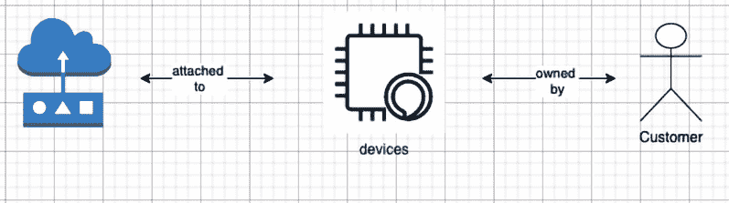

第 5 章:从边缘摄取和流式传输数据
边缘计算可以减少传输到云(或内部数据中心)的数据量，从而节省网络带宽成本。通常，高性能边缘应用需要本地计算、存储、网络、数据分析和机器学习能力，以低延迟处理高保真数据。AWS 将基础架构扩展到边缘，超出区域和可用性区域，根据您的工作负载需要尽可能靠近端点。正如您在前面章节中了解到的， AWS 物联网 Greengrass 允许您在设备和网关上运行复杂的边缘应用。
在本章中，您将了解适用于边缘工作负载的不同数据设计和转换策略。我们将解释如何根据边缘的数据速度(如热、暖、冷)数据多样性(如结构化和非结构化)数据量(如高频或低频)，通过不同的工作流从不同的传感器获取数据。此后，您将学习将原始数据和转换后的数据从边缘传输到不同云服务的方法。本章结束时，您应该熟悉使用 AWS IoT Greengrass 进行数据处理。
在本章中，我们将讨论以下主要话题:
- 为物联网工作负载定义数据模型
- 为边缘设计数据模式
- 了解流管理器
- 在边缘构建您的第一个数据编排工作流
- 从边缘流向云上的数据湖
技术要求
本章的技术要求与第二章 【边缘工作负载基础】中的 相同。请参阅该章中的完整要求。
你可以在这里找到 GitHub 代码库:https://GitHub . com/packt publishing/Intelligent-Workloads-at-the-Edge/tree/main/chapter 5
定义物联网工作负载的数据模型
据 IDC 预测，到 2025 年，全球数据总量将从 2018 年的 33 兆字节增长到 2025 年的 175 兆字节。此外，IDC 估计，2025 年将有 416 亿联网物联网设备或事物，产生 79.4 ZB 的数据(https://www . datanami . com/2018/11/27/global-data sphere-to-hit-175-zetta bytes-by-2025-IDC-says/)。此外，许多其他来源重申，数据和信息是信息产业的货币、命脉、甚至是新石油。
因此，数据驱动的经济在这里将继续存在，而物联网 ( IoT )将成为从大量设备(或端点)获取数据的使能器，如传感器和执行器，并为实现业务成果生成聚合的见解。因此，作为一名物联网从业者，你应该熟悉数据建模的基本概念，以及它如何在边缘实现数据管理。
工业、商业、消费、运输、能源、医疗保健等不同垂直行业的所有组织都在探索新的使用案例，以提高他们的收入或利润，并代表他们的客户进行创新。消费者家中的联网集线器、道路上的智能停车计时器或联网汽车等物联网设备将与客户共存，即使在没有互联网连接的情况下也能运行。
这是对过去适用于企业的集中式解决方案的一种范式转变。例如，一名银行员工可能将他们的工作负载托管在数据中心，但现在他们可以在分支机构近乎实时地监控客户活动(如可疑行动、人流或 ATM 中的可用现金)，以便更好地为客户服务。因此，需要一种新的策略来处理本地生成的数据，并能够处理和将数据从边缘传输到云。
在本章中，我们将重新思考和评估不同大数据架构在物联网和边缘计算环境中的适用性。我们将考虑的三个领域是数据管理、数据架构模式和反模式。
什么是数据管理？
根据来自数据管理协会 ( DAMA )的数据管理知识体系 ( DMBOK2 )，数据管理是计划、政策、程序和实践的开发、执行和监督，这些计划、政策、程序和实践在数据和信息资产的整个生命周期中交付、控制、保护和提高数据和信息资产的价值(有关更多信息，请参见上的 DAMA-DMBOK2
DAMA 详细介绍了数据管理框架，如下图所示:
图 5.1–数据管理生命周期
在这里，我们认识到了用与边缘计算相关的概念来扩充 DAMA 框架的机会。因此，在本节中，我们将深入探讨与数据建模、数据架构和数据集成和互操作性 ( DII )相关的原则，我们认为这些原则与边缘计算和物联网相关。
在讨论如何对数据建模之前，我们先在物联网的背景下定义数据。物联网数据由不同的传感器、执行器和网关生成。因此，它们可以以不同的形式出现，如下所示:
- 结构化数据:指一种可预测的数据形式；示例包括设备元数据和设备关系。
- 半结构化数据:这是一种具有一定方差和随机性的数据形式；示例包括传感器和执行器馈电。
- 非结构化数据:这是一种方差和随机性程度较高的数据形式；示例包括原始图像、音频或视频。
现在，让我们讨论如何使用数据建模技术来管理、组织和存储不同形式的数据。
什么是数据建模？
数据建模是软件工程中常见的实践，其中定义并分析数据需求，以支持组织范围内不同信息系统的业务流程。有三种不同类型的数据模型:
- 概念数据模型
- 逻辑数据模型
- 物理数据模型
下图显示了不同建模方法之间的关系:
图 5.2–数据建模方法
有趣的事实
第二次世界大战期间，英格玛机被德国军方用作所有安全无线通信的主要通信模式。大约 80 年前，艾伦·图灵破解了英格玛密码，当时他发现了每条信息末尾的文本。这有助于破译德国军方的关键秘密信息，并有助于结束世界大战。此外，这种机制通过定义一种语言来解释数据，从而开启了洞察时代，后来这种语言被形式化为数据建模。
数据库最常见的数据建模技术是实体关系 ( ER )模型。软件工程中的 ER 模型是一种常见的方式，以图形方式表示不同实体(如人、对象、地点、事件等)之间的关系，以便更好地组织信息来驱动组织的业务流程。换句话说，er 模型是一个抽象的数据模型，它定义了所需信息的数据结构，并且可以独立于任何特定的数据库技术。在本节中，我们将使用 ER 模型方法解释不同的数据模型。首先，让我们借助用例图来定义客户与其设备(与连接的 HBS 枢纽相关联)之间的关系:
图 5.3–用例图
现在，让我们通过一系列概念、逻辑和物理模型来构建 ER 图:
- The conceptual data model defines the entities and their relationships. This is the first step of the data modeling exercise and is used by personas such as data architects to gather the initial set of requirements from the business stakeholders. For example, sensor, device, and customer are three entities in a relationship, as shown in the following diagram: 
图 5.4–概念数据模型
- The conceptual model is then rendered into a logical data model. In this step of data modeling, the data structure along with additional properties are defined using a conceptual model as the foundation.
例如，您可以定义关系中不同实体的属性，如传感器类型或设备标识符(通常是序列号或 MAC 地址)，如下表所示。此外，可能存在不同形式的关系，例如:
- 关联是设备和传感器之间的关系。
- 所有权是客户和设备之间的关系。
下图说明了上述各点:
图 5.5-逻辑数据模型
- 数据建模的最后一步是从定义的逻辑模型构建一个物理数据模型。物理模型通常是数据模型的特定于技术或产品的实现。例如，您为一个实体的不同属性定义数据类型，比如一个数字或一个字符串，该实体将被部署在来自特定供应商的数据库解决方案上:

图 5.6–物理数据模型
几十年来，企业一直使用 ER 建模来设计和管理复杂的分布式数据解决方案。所有前面的步骤都可以想象为以下工作流，它不限于任何特定的技术、产品、主题领域或操作环境(如数据中心、云或边缘):
图 5.7–数据建模流程
既然已经理解了数据建模的基础，在下一节中，让我们来看看如何为物联网工作负载实现这一点。
你是如何设计物联网的数据模型的？
现在，让我们看一下如何将前述数据建模概念应用于物联网工作负载常见的结构化、非结构化和半结构化数据领域的一些示例。通常，当我们提到结构化数据的数据建模时，首先想到的是关系数据库。然而，对于大多数物联网工作负载，结构化数据通常包括设备和其他实体之间的分层关系。使用图表或有序的键值数据库可以更好地说明这一点。同样，对于半结构化数据，当涉及到物联网工作负载时，它通常被描述为键值、时间序列或文档存储。
在本节中，我们将向您简要介绍使用 NoSQL 数据解决方案的数据建模技术，以继续为 HBS 构建附加功能。建模 RDBMS 超出了本书的范围。然而，如果你有兴趣了解它们，网上有大量的资料可供你参考。
NoSQL 数据库旨在为开发人员提供自由，使其脱离较长的数据库模式设计周期。然而，认为 NoSQL 数据库缺乏任何类型的数据模型是错误的。设计 NoSQL 解决方案与 RDBMS 设计截然不同。对于 RDBMS，开发人员通常创建一个遵循规范化准则的数据模型，而不关注访问模式。当新的业务需求出现时，数据模型可以被修改，从而导致漫长的发布周期。收集的数据组织在不同的表中，具有行、列和引用完整性。相比之下，对于 NoSQL 解决方案设计，开发人员在知道需要回答的问题之前不能开始设计模型。理解从用例向后工作的业务查询是很重要的。因此，在通过关系数据库或 NoSQL 数据库进行数据建模的过程中，需要记住的一般经验规则如下:
- 关系建模主要关心数据的结构。设计原则是我得到什么答案？
- NoSQL modeling primarily cares about application-specific access patterns. The design principle is What questions do I ask?
有趣的事实
NoSQL 缩写的常见的翻译是而不仅仅是 SQL 。这突出了这样一个事实，即 NoSQL 不仅支持 NoSQL，还可以处理关系型、半结构化和非结构化数据。亚马逊、脸书、Twitter、LinkedIn 和谷歌等组织设计了不同的 NoSQL 技术。
在我向您展示一些数据建模的示例之前，让我们先了解一下我们的应用程序(即 HBS 中心)访问模式的五个基本属性，为了提出相关的问题，需要考虑这些属性:
- Data type: What's the type of data in scope? For example, is the data related to telemetry, command-control, or critical events? Let's quickly refresh the use of each of these data types:
a) 遥测:这是传感器/执行器传输的持续数据流，如温度或湿度读数，这些数据可以在边缘聚合或发布到云端进行进一步处理。
b) 命令和控制:这些是可操作的消息，例如开灯/关灯，它们可以发生在两个设备之间，也可以发生在最终用户和设备之间。
c) 事件:这些数据模式可以识别比常规遥测数据更复杂的场景，如家中网络中断或建筑物火警。
- 数据量:范围内的数据量是多少？是否有必要在本地(在边缘)存储和检索数据，或者数据是否需要传输到不同的数据持久层(比如云上的数据湖)？
- 数据形状:从不同的边缘设备生成的数据是什么形式，比如文本、斑点和图像？请注意，不同的数据形式，如图像和视频可能有不同的计算需求(想想 GPU)。
- 数据速度:根据所需的延迟，处理查询的数据速度是多少？您有热、温或冷的数据路径吗？
- 数据一致性:相对于最终的一致性，这些数据中有多少需要具有很强的一致性？
- 基础方法论 : 基本可用，软状态，最终一致性，这是 NoSQL 数据库的典型特征
- ACID 方法论 : 原子性，一致性，隔离性， 和持久性，这些都是关系数据库的典型特征
接下来我们将更详细地讨论这些概念。
为物联网工作负载选择 ACID 还是 BASE
下表列出了两种方法之间的一些关键差异。这将使您能够从您的用例向后工作，做出明智的决策:
图 5.8–酸与碱的对比总结
有趣的事实
酸和碱代表了 pH 值范围的对立双方。吉姆·格雷在 1970 年构思了这个想法，随后在 1981 年 6 月发表了一篇名为《交易概念:优点和局限性》的论文。
到目前为止，您已经理解了数据建模和设计方法的基础。您一定很想知道如何将这些概念与您在前面章节中开发的联网 HBS 产品联系起来。让我们来探索一下橡胶是如何接触路面的。
答对了。它是概念性的。
互联 HBS 枢纽的概念建模
图 5.9–互联 HBS 的概念数据模型
在上图中，您可以观察到不同的设备(如灯、HVAC 和洗衣机)是如何安装在房子的不同房间中的。现在概念模型已经就绪，让我们看看逻辑视图。
连接 HBS 枢纽的逻辑建模
为了构建逻辑模型，我们需要问自己最终消费者可能会问的问题类型，例如:
- 显示设备的状态(如洗涤是否完成？).
- 打开或关闭设备(如关灯)。
- 显示设备的读数(例如现在的温度是多少？).
- 取一个新的读数(比如冰箱正在消耗多少能量？).
- 显示一段时间内设备的聚合连接状态。
为了解决这些问题，让我们来确定最终应用程序的访问模式:

图 5.10–互联 HBS 的逻辑数据模型
现在我们已经获得了数据建模需求的摘要，您可以观察到该解决方案需要以高频率接收结构化和半结构化格式的数据。此外，它不需要很强的一致性。因此，使用利用基础方法的 NoSQL 解决方案来设计数据层是有意义的。
已连接的 HBS 枢纽的物理建模
作为最后的步骤，我们需要从收集的需求中定义物理的数据模型。为此，我们将定义一个主键和一个辅键。如果您不知道所有的属性，您不需要定义它们，这是 NoSQL 解决方案的一个关键优势。
定义主键
顾名思义，是表中必需的属性之一，通常被称为分区键。在表中，任何两个主键都不应该有相同的值。还有一个组合键的概念。它由两个属性组成，一个分区键和一个排序键。
在我们的场景中，我们将创建一个带有组合键的Sensor表(如下图所示)。主键是一个设备标识符，排序键是一个时间戳，使我们能够查询一个时间范围内的数据:
图 5.11–传感器表中的组合键
定义二级索引
除了针对主键或组合键的查询之外，辅助索引允许用户使用不同的键查询表中的数据。这使您的应用程序在查询不同用例的数据时更加灵活。使用辅助索引执行查询非常类似于直接从表中查询。
因此，对于二级索引，如下图所示，我们选择主键作为传感器标识符(sensor_id)，时间戳作为排序键:
图 5.12–传感器表中的二级索引
定义附加属性
NoSQL 解决方案的关键优势是没有强制模式。因此，当数据进来时，可以动态地创建其他属性。也就是说，如果开发人员已经知道一些属性，那么将这些属性包含在数据 模型中是没有限制的:
图 5.13–传感器表中的其他属性
现在数据层已经存在，让我们创建访问这些数据的接口。
定义接口
现在我们将为传感器表创建两个不同的面。一个方面是一个虚拟构造，它支持存储在一个表中的数据的不同视图。这些方面可以被映射到一个函数构造，例如，作为在表上执行各种创建、读取、更新、删除 ( CRUD )操作的方法或 API:
putItems:这个方面允许写操作，并且在有效负载中至少需要组合键。getItems:该方面允许读取操作，可以查询具有全部或选择性属性的项目。
图 5.14–getItems 方面定义
所以，现在您已经创建了数据模型及其接口。这使您能够理解开发 edge 应用程序所需的数据特征。
在边缘设计数据模式
随着数据通过不同的协议或通道从边缘的不同传感器/执行器安全地流向网关或云，有必要对其进行安全存储、处理和编目，以供进一步使用。因此，任何物联网数据架构都需要考虑数据模型(如前所述)、数据存储、数据流模式和反模式，这将在本节中讨论。先说数据存储。
数据存储
云上的大数据解决方案旨在可靠地存储数 TB、数 Pb 或数 EB 的数据，并且可以跨全球多个地理位置进行扩展，以便为企业提供高可用性和冗余，从而满足其恢复时间目标 ( RTO )和恢复点目标 ( RPO )。然而，边缘解决方案，例如我们自己的互联 HBS 中心解决方案，在计算、存储和网络方面受到资源限制。因此，我们需要设计边缘解决方案来迎合不同的时间敏感、低延迟用例，并将繁重的工作交给云。数据湖是当今云上众所周知的模式，它允许一个集中的存储库在数据到达时存储数据，而不必首先对数据进行结构化。此后，可以对该数据执行不同类型的分析、机器学习和可视化，以便消费者实现更好的业务成果。那么，边缘的数据湖相当于什么呢？
让我们引入一个新的模式，称为 a 数据池，用于在边缘生成和临时持久化的权威数据源(即黄金源)。数据池的某些特征如下所示:
- 数据池支持以快速灵活的方式快速接收和消费数据。数据生产者只需要知道将数据推送到哪里，即本地存储、本地流或云。存储层、模式、接收频率和数据质量的选择由数据生产者决定。
- 数据池应该与低成本存储一起工作。一般物联网设备存储低；因此，只有与边缘操作相关的高价值数据才能在本地持久化。其余的数据被推送到云中进行进一步处理，或者被丢弃(如果有噪声的话)。
- 数据池支持读取模式。一个数据池中可以有多个支持多种模式的流。
- 数据池应该支持静态和加密的数据保护机制。实现基于角色的访问也很有用，它允许在数据从边缘流向云时对数据进行审计。
下图显示了如何在数据池中持久保存和安全管理从不同传感器/执行器收集的数据的边缘架构:
图 5.15–边缘的数据池架构
上述数据流中涉及的组织实体包括:
- 数据生产者:这些是产生数据的实体。这些实体包括物理实体(如传感器、执行器或相关设备)或逻辑实体(如应用程序)，并被配置为将数据存储在数据池中或将数据发布到云。
- 数据池团队:一般来说，数据运营团队定义数据池(或湖)的数据访问机制，开发团队支持数据管理。
- 数据消费者:边缘和云应用使用授权的机制从数据池(或湖)中检索数据，以进一步迭代数据并满足业务需求。
以下屏幕截图显示了数据池的组织实体:
图 5.16–数据池的组织实体
现在您已经理解了数据是如何存储在数据池中并由不同的实体管理或控制的。接下来，让我们讨论一下数据的不同风格，以及它们是如何集成的。
数据集成概念
- 批次:该层汇总了数据生产者已经生成的数据。目标是通过整合来自多个来源或维度的数据来提高数据洞察力的准确性。
- 速度:这一层流式传输数据生产者生成的数据。目标是允许以可接受的准确度水平对数据进行接近实时的分析。
- 服务:这一层融合了来自批处理层和速度层的数据，使下游的消费者或企业用户能够全面、渐进地洞察业务。
下图是 DII 的一个例子:
图 5.17 -数据集成和互操作性(DII)
如您所见，数据流中有多个层通常使用大数据世界中的提取、转换和加载 ( ETL )方法或提取、加载和转换 ( ELT )方法来实现。ETL 方法包括从不同来源提取数据、实现数据质量和一致性标准、转换(或聚合)数据以符合标准格式，以及将数据加载(或交付)到下游应用程序的步骤。
ELT 过程是 ETL 的变体，具有相似的步骤。不同之处在于，提取的数据在转换之前加载。这对于边缘工作负载也很常见，本地网关可能没有足够的资源在本地进行转换；因此，它会在附加处理之前发布数据。
但是这些数据集成模式是如何在边缘中使用的呢？接下来我们来探讨一下。
数据流模式
- 从传感器/执行器等设备中提取数据
- 数据转换，将数据清理、过滤或重组为优化的格式，以供进一步使用
- 数据加载将数据发布到持久层，如数据池、数据湖或数据仓库
对于 ELT 流程，步骤 2 和 3 将以相反的顺序进行。
联网家庭的 ETL 场景
例如，在互联家庭场景中，通常从不同的传感器/执行器提取数据，然后进行数据转换，可能包括格式更改、结构更改、语义转换或重复数据删除。此外，数据转换允许您从家中过滤掉任何嘈杂的数据(想想哭泣的婴儿或吵闹的宠物)，从而降低将所有位和字节发布到云的网络费用。根据入侵警报或补充打印机碳粉等使用案例，可以批量或实时执行数据转换，方法是将结果物理存储在暂存区，或将传输的数据虚拟存储在内存中，直到您准备好进入加载步骤。
随着时间的推移，这些核心模式(ETL 或 ELT)已经演变成不同的数据流架构，如事件驱动、批处理、lambda 和 复杂事件处理(CEP)。我们将在下一节解释它们。
事件驱动(或流)
当事件发生时，edge 应用程序在一天中以较小的集合生成和处理数据是非常常见的。近实时数据处理具有较低的延迟，并且可以是同步和异步的。
在异步数据流中，设备(如传感器)在继续处理之前不会等待接收系统确认更新。例如，在联网家庭中，运动/占用传感器可以根据检测到的事件触发入侵者通知，但无需等待确认即可继续监控。
相比之下，在实时同步数据流中，源和目标之间没有时间延迟或其他差异是不可接受的。例如，在联网的家庭中，如果有火警，它应该以确定的方式通知紧急服务。
使用 AWS Greengrass，您可以设计同步数据通信和异步数据通信。除此之外，当我们在边缘构建多方面架构时，在边缘构建多处理或多线程多语言解决方案以支持不同的低延迟用例是很正常的:
图 5.18–边缘的事件驱动架构
微批量(或聚合处理)
大多数企业执行频繁的批处理以使最终用户具有商业洞察力。在这种模式下，数据移动将代表给定时间点的完整数据集，如在一段时间(如一天、一周或一个月)结束时联网家庭的电能表读数，或自上次发送以来值已发生变化的数据，如 hvac 读数或触发的火警。一般来说，批处理系统被设计成随着数据成比例地扩展和增长。然而，由于马力不足，这在边缘是不可行的，如前所述。
因此，对于物联网用例，利用微批处理更常见。在这里，数据存储在本地，并以更高的频率进行处理，例如每隔几秒、几分钟、几小时或几天(几周或几个月)。这使得数据消费者能够以更低的延迟和成本从本地数据源收集见解，即使在与互联网断开连接的情况下也是如此。AWS Greengrass 的流管理器功能允许您在边缘执行聚合处理。Stream Manager 带来了关于如何在边缘处理数据的增强功能，例如为多个通道定义带宽和数据优先级、超时行为以及直接导出到不同 AWS 服务的机制，如亚马逊 S3、AWS 物联网分析、AWS 物联网 SiteWise 和亚马逊 Kinesis 数据流:
图 5.19–边缘微批量架构
λ架构
Lambda 架构是一种结合了微批处理和流(接近实时)数据处理的方法。它使整合的数据可用于下游消费。例如，制冷机组、加湿器或制造工厂中的任何关键机器都可以在停止运行之前得到监控和修复。因此，对于联网的 HBS 枢纽解决方案，微批处理将允许您检测长期趋势或故障模式。反过来，这种能力将帮助您的车队运营商向最终消费者推荐机器的预防性或预测性维护。此工作流通常被称为数据分析流的热路径或冷路径。
另一方面，流处理将允许船队运营商通过遥测数据获得接近实时的见解。这将使消费者能够采取关键行动，如锁定整个房子，并在检测到任何盗窃行为时呼叫紧急服务。这是，也称为 lambda 架构中的热路径:
图 5.20–边缘的 Lambda 架构
有趣的事实
Lambda 架构与 AWS lambda 服务无关。这个术语是 Nathan Marz 创造的，他在 BackType 和 Twitter 从事大数据相关技术的工作。这是一个设计模式，用于描述可伸缩和容错的数据处理。
边缘的数据流反模式
到目前为止，我们已经了解了边缘上常见的数据流模式。让我们也讨论一些反模式。
复杂事件处理
事件是从摄取的数据中识别复杂情况的数据模式，例如家中的网络中断或建筑物中的火警。从几个传感器或设备检测事件可能更容易；然而，从不同来源获得复杂事件的可见性，并能够捕获状态或触发条件逻辑来快速识别和解决问题，需要特殊处理。
这就是 CEP 模式发挥作用的地方。CEP 可能是资源密集型的，需要扩展到所有规模的数据并按比例增长。因此，它仍然不是一个非常常见的边缘模式。在云上，AWS 物联网事件或 AWS EventBridge 等托管服务可以让您更轻松地对物联网设备生成的数据执行 CEP。
一批
传统上，在批处理中，数据以 blobs 或文件的形式在聚合中移动，要么根据消费者的特别请求，要么按照定期计划自动移动。数据可以是完整集(称为快照)，也可以是从给定时间点开始的更改集(增量)。批处理需要不断扩展底层基础架构，以满足数据增长和处理需求。因此，这种模式更适合云上的大数据或数据仓库解决方案。也就是说，对于 edge 用例，您仍然可以利用微批处理模式(如前所述)来聚合数据，这在资源受限的环境中是可行的。
分身术
在云上维护跨不同位置的数据集的冗余副本是一种常见的做法，以提高业务连续性、改善最终用户体验或增强数据弹性。然而，在边缘的环境中，数据复制可能会很昂贵，因为您可能需要冗余部署。例如，对于互联 HBS 集线器解决方案，如果网关需要支持用于复制的冗余存储，它将增加硬件的物料清单 ( BOM )成本，并且您可能会失去市场竞争优势。
归档
不经常使用或不经常使用的数据可以移动到对组织更具成本效益的备用数据存储解决方案中。与复制类似，为了在边缘本地归档数据，需要额外部署硬件资源。这增加了设备的物料清单 ( BOM )成本，并导致额外的运营开销。因此，通常将转换后的数据从数据湖归档到云上的经济高效的存储服务，如亚马逊冰川。此后，这些数据可用于本地操作、数据恢复或法规需求。
实验室实践方法
在这个部分，您将学习如何使用不同的 AWS 服务在边缘构建 lambda 架构。下图显示了 lambda 架构:
图 5.21–实验室架构
上述工作流使用以下服务。在本章中，您将完成步骤 1–6(如图图 5.21 所示)。这包括设计和部署边缘组件，在本地处理和转换数据，并将数据推送到不同的云服务:
\

图 5.22–动手实验组件
在这一动手操作部分，您的目标将包括以下内容:
- 构建云资源(即亚马逊 Kinesis 数据流、亚马逊 S3 桶和 DynamoDB 表)。
- 在 Raspberry Pi 上本地构建和部署边缘组件(即工件和食谱)。
- 验证数据从边缘流向云(AWS 物联网核心)。
构建云资源
从chapter5/cfn文件夹部署 CloudFormation 模板来创建云资源，比如亚马逊 S3 桶、Kinesis 数据流和 DynamoDB 表。如果需要，您将需要在下一节中替换已部署堆栈的资源部分中的这些名称。
建筑边缘构件
- 从您的 Raspberry Pi 设备的终端导航到以下工作目录:
cd hbshub/artifacts
- 使用您选择的编辑器打开 Python 脚本(例如 nano 、 vi 或 emac ):
DummySensorclass that will be referenced by thePublishercomponent in the next step:def read_value(self): message = {} device_list = ['hvac', 'refrigerator', 'washingmachine'] device_name = random.choice(device_list) if device_name == 'hvac' : message['device_id'] = "1" message['timestamp'] = float("%.4f" % (time())) message['device_name'] = device_name message['temperature'] = round(random.uniform(10.0, 99.0), 2) message['humidity'] = round(random.uniform(10.0, 99.0), 2) elif device_name == 'washingmachine' : message['device_id'] = "2" message['timestamp'] = float("%.4f" % (time())) message['device_name'] = device_name message['duty_cycles'] = round(random.uniform(10.0, 99.0), 2) else : message['device_id'] = "3" message['timestamp'] = float("%.4f" % (time())) message['device_name'] = device_name message['vibration'] = round(random.uniform(100.0, 999.0), 2) return message - 现在，打开下面的
publisher脚本，浏览代码:hbs/localtopictopic every10seconds overipc:TIMEOUT = 10 ipc_client = awsiot.greengrasscoreipc.connect() sensor = DummySensor() while True: message = sensor.read_value() message_json = json.dumps(message).encode('utf-8') request = PublishToTopicRequest() request.topic = args.pub_topic publish_message = PublishMessage() publish_message.json_message = JsonMessage() publish_message.json_message.message = message request.publish_message = publish_message operation = ipc_client.new_publish_to_topic() operation.activate(request) future = operation.get_response() future.result(TIMEOUT) print("publish") time.sleep(5) - 现在您已经检查了代码，检查下面的配方文件来检查
Publisher组件所需的访问控制和依赖关系:cd ~/hbshub/recipes nano com.hbs.hub.Publisher-1.0.0.yaml
- 现在我们已经有了组件和配方，让我们创建一个本地部署:
sudo /greengrass/v2/bin/greengrass-cli deployment create --recipeDir ~/hbshub/recipes --artifactDir ~/hbshub/artifacts --merge "com.hbs.hub.Publisher=1.0.0" Local deployment submitted! Deployment Id: xxxxxxxxxxxxxx
- Verify that the component has successfully been deployed (and is running) using the following command:
sudo /greengrass/v2/bin/greengrass-cli component list
以下是输出:
Components currently running in Greengrass: Component Name: com.hbs.hub.Publisher Version: 1.0.0 State: RUNNING
- 既然
Publisher组件已经启动并运行，我们也来看看Subscriber组件中的代码:Subscribercomponent subscribes to thehbs/localtopictopic over theipcprotocol and gets triggered by the published events from the publisher:def setup_subscription(): request = SubscribeToTopicRequest() request.topic = args.sub_topic handler = StreamHandler() operation = ipc_client.new_subscribe_to_topic(handler) future = operation.activate(request) future.result(TIMEOUT) return operation
然后，订阅者通过
mqtt将消息推送到 AWS 物联网核心上的hbs/cloudtopic云主题:def send_cloud(message_json): message_json_string = json.dumps(message_json) request = PublishToIoTCoreRequest() request.topic_name = args.pub_topic request.qos = QOS.AT_LEAST_ONCE request.payload = bytes(message_json_string,"utf-8") publish_message = PublishMessage() publish_message.json_message = JsonMessage() publish_message.json_message.message = bytes(message_json_string, "utf-8") request.publish_message = publish_message operation = ipc_client.new_publish_to_iot_core() operation.activate(request) logger.debug(message_json)
- 现在您已经检查了代码，让我们检查下面的配方文件来检查
Subscriber组件所需的访问控件和依赖关系:cd ~/hbshub/recipes nano com.hbs.hub.Subscriber-1.0.0.yaml
- Now we have the component and the recipe, let's create a local deployment:
sudo /greengrass/v2/bin/greengrass-cli deployment create --recipeDir ~/hbshub/recipes --artifactDir ~/hbshub/artifacts --merge "com.hbs.hub.Subscriber=1.0.0"
以下是输出:
Local deployment submitted! Deployment Id: xxxxxxxxxxxxxx
- Verify that the component has successfully been deployed (and is running) using the following command. Now you should see both the
PublisherandSubscribercomponents running locally:sudo /greengrass/v2/bin/greengrass-cli component list
以下是输出:
Components currently running in Greengrass: Component Name: com.hbs.hub.Publisher Version: 1.0.0 State: RUNNING Component Name: com.hbs.hub.Subscriber Version: 1.0.0 State: RUNNING
- As you have observed, in the preceding code, the
Subscribercomponent will not only subscribe to the localmqtttopics on the Raspberry Pi, but it will also start publishing data to AWS IoT Core (on the cloud). Let's verify that from the AWS IoT console:小费
如果您已经更改了配方文件中的默认主题名称，请在订阅时使用该名称；否则，您将看不到收到的信息。
- 现在，您已经有了从边缘到云的近乎实时的数据流动，让我们通过与 Stream Manager 集成来处理微批处理流。该组件将订阅
hbslocal/topic主题(与订阅者相同)。但是，它会使用流管理器功能将数据附加到本地数据流，而不是发布到云。流管理器是在边缘构建 lambda 架构的关键功能。我们将把代码分解成不同的片段，以便您更好地理解这些概念。因此，让我们导航到工作目录:nano com.hbs.hub.Aggregator/1.0.0/hbs_aggregator.py
- 首先，我们创建一个具有所需属性的本地流，比如流名称、数据大小、生存时间、持久性、数据刷新、数据保留策略等等。流中的数据可以留在本地供进一步处理，也可以使用导出定义参数导出到云中。在我们的例子中，我们将数据导出到 Kinesis，但是您可以使用类似的方法将数据导出到其他支持的服务，例如如 S3、物联网分析等等:
iotclient.create_message_stream( MessageStreamDefinition( name=stream_name, max_size=268435456, stream_segment_size=16777216, time_to_live_millis=None, strategy_on_full=StrategyOnFull.OverwriteOldestData, persistence=Persistence.File, flush_on_write=False, export_definition=ExportDefinition( kinesis=[ KinesisConfig( identifier="KinesisExport", kinesis_stream_name=kinesis_stream, batch_size=1, batch_interval_millis=60000, priority=1
- Now the stream is defined, the data is appended through
append_message api:sequence_number = client.append_message(stream_name=stream_name, data= event.json_message.message)
事实核查
Stream Manager 允许您在边缘部署 lambda 架构，而不必部署和管理单独的轻量级数据库或流解决方案。因此，您可以降低此解决方案的运营开销或 BOM 成本。除此之外，使用 Stream Manager 作为数据池，您可以使用无模式的方法动态地在边缘持久化数据(还记得 BASE 吗？).最后，您可以使用流管理器和云数据服务(如物联网分析、S3 和 Kinesis)之间的原生集成将数据发布到云，而无需编写任何额外的代码。流管理器对于具有较大有效负载的用例也是有益的，例如可以通过 HTTPS 轻松传输的 blobs、图像或视频。
- Now that you have reviewed the code, let's add the required permission for the Stream Manager component to update the Kinesis stream:
请导航至 AWS 物联网控制台。选择安全(在左窗格上)。|选择角色别名并选择合适的一个。|点击编辑 IAM 角色。|附加策略。|选择亚马逊 Kinesis 完全访问。|附加策略。
请注意，不建议对生产工作负载使用类似的一揽子策略。这里使用它是为了让读者更容易在测试环境中操作。
- 让我们在部署这个组件之前快速检查一下配方文件:
Configurationsection in this recipe file, as it requires the Kinesis stream name to be updated. This can be retrieved from the resources section of the deployed CloudFormation stack. Also, note the dependencies on the Stream Manager component and the reference tosdk, which is required by the component at runtime:ComponentConfiguration: DefaultConfiguration: sub_topic: "hbs/localtopic" kinesis_stream: "<replace-with-kinesis-stream-from cfn>" accessControl: aws.greengrass.ipc.pubsub: com.hbs.hub.Aggregator:pubsub:1: policyDescription: "Allows access to subscribe to topics" operations: - aws.greengrass#SubscribeToTopic - aws.greengrass#PublishToTopic resources: - "*" ComponentDependencies: aws.greengrass.StreamManager: VersionRequirement: "^2.0.0" Manifests: - Platform: os: all Lifecycle: Install: pip3 install awsiotsdk numpy -t . Run: | export PYTHONPATH=$PYTHONPATH:{artifacts:path}/stream_manager PYTHONPATH=$PWD python3 -u {artifacts:path}/hbs_aggregator.py --sub-topic="{configuration:/sub_topic}" --kinesis-stream="{configuration:/kinesis_stream}" - 接下来，我们已经检查了工件和配方，让我们创建一个本地部署:
sudo /greengrass/v2/bin/greengrass-cli deployment create --recipeDir ~/hbshub/recipes --artifactDir ~/hbshub/artifacts --merge "com.hbs.hub.Aggregator=1.0.0" Local deployment submitted! Deployment Id: xxxxxxxxxxxxxx
- Verify that the component has been successfully deployed (and is running) using the following command. You should observe all the following components running locally:
sudo /greengrass/v2/bin/greengrass-cli component list
输出如下所示:
Components currently running in Greengrass: Component Name: com.hbs.hub.Publisher Version: 1.0.0 State: RUNNING Component Name: com.hbs.hub.Subscriber Version: 1.0.0 State: RUNNING Component Name: com.hbs.hub.Aggregator Version: 1.0.0 State: RUNNING
- The
Aggregatorcomponent will publish the data directly from the local stream to the Kinesis stream on the cloud. Let's navigate to the AWS S3 console to check whether the incoming messages are appearing:前往亚马逊 Kinesis 控制台。选择数据流。|选择流。|转到监控选项卡。|检查指标如传入数据或获取记录。
如果您看到指标在图表上显示一些数据点，这意味着数据正在成功到达云。
注意
你总能在之前部署的 CloudFormation 栈的资源或输出部分找到本实验所需的具体资源名称(比如前面的 Kinesis 流)。
验证从边缘流向云的数据
在此部分，您将执行一些最终验证，以确保从边缘组件流出的事务性和批处理数据成功地保存在数据湖中:
- In step 19 of the previous section, you validated that the Kinesis stream is getting data through metrics. Now, let's understand how that data is persisted to the data lake from the streaming layer:
进入亚马逊 Kinesis 控制台 。 |选择输送流。|选择各自的传送流。|点击配置选项卡。|向下滚动到目的地设置。|点击亚马逊 S3 目的地下方的 S3 桶。
单击存储桶并深入到以压缩格式存储批处理数据的子存储桶，以帮助优化存储成本。
- As the final step, navigate to
Tables. Then, select the table for this lab. Click on View Items.可以查看时间序列数据吗？出色的工作。
注意
如果您无法完成上述任何步骤，请参考 GitHub 资源库中的故障排除部分，或者创建一个问题以获得更多说明。
恭喜你！你已经走了很长的路来学习如何使用不同的 AWS edge 和云服务构建一个跨越从边缘到云的λ架构。现在，在我们结束这一章之前，让我们总结一些额外的话题。
附加话题供参考
除了我们到目前为止读到的内容，我还想提几个话题。只要你有时间，请看看它们，因为它们确实有很多好处，而且可以在网上找到。
时间序列数据库
在这一章中，我们学习了如何利用 NoSQL(键值)数据存储，比如 Amazon DynamoDB，来保存时间序列数据。另一种常见的保存物联网数据的方式是使用时间序列数据库 ( TSDB )，如亚马逊时间流或 Apache Cassandra 。正如您现在所知道的，时间序列数据由从不同来源收集的测量或事件组成，如随时间索引的传感器和执行器。因此，时间序列数据库建模的基本原理与之前用 NoSQL 数据解决方案解释的非常相似。所以，一个显而易见的问题是，你如何在 NoSQL 和 TSDB 之间做出选择？看看以下注意事项:
- Consider the data summarization and data precision requirements:
例如，显示每月或每年的能源利用率。这需要检查由时间范围索引的一系列数据点，以计算在过去 12 周内同一时期能量的百分位数增加，按周汇总。对于分布式键值存储，这种查询可能会变得很昂贵。
- Consider purging the data after a period of time:
例如，消费者真的关心以小时为基础的高精度指标来计算他们每月的总能源利用率吗？大概不会。因此，在短时间内存储高精度数据，然后存储聚合和缩减采样数据以识别长期趋势会更有效。这个功能也可以通过一些 NoSQL 数据库部分实现(比如 DynamoDB item expiry 功能)。但是，TSDBs 更适合，因为它们还可以使用不同的方法(如物化视图)提供缩减采样和聚合功能。
非结构化数据
你一定很好奇，我们在这一章的大部分讨论都与结构化和半结构化数据有关。我们根本没有触及非结构化数据(比如图像、音频和视频)。你完全正确。考虑到物联网是物理世界和网络世界之间的桥梁，将会有大量的非结构化数据需要针对不同的分析和机器学习用例进行处理。
例如，考虑一个场景，安装在客户家中的安全摄像头通过运动传感器检测到任何渗透或意外移动，并开始传输周围的视频。该提要将通过您的 smart hub 或移动设备提供以供消费。因此，在这种情况下，安全摄像机正在以非结构化数据的形式传输视频，作为 P2P 提要，也可以存储(如果用户允许)在本地中心或云上的对象存储中。在 第七章 、边缘的机器学习工作负载中，您将学习从边缘摄取、存储和推断非结构化数据的技术。然而，我们不会深入研究非结构化数据的建模技术，因为它主要属于数据科学范畴，与物联网从业者的日常生活没有太大关系。
总结
在本章中，您了解了物联网边缘工作负载常见的不同数据建模技术、数据存储和数据集成模式。您了解了如何在 Greengrass 上构建、测试和部署 edge 组件。此外，您实现了一个 lambda 架构来收集、处理和流式传输来自边缘的不同来源的数据。最后，您通过在物联网核心上可视化传入数据来验证工作流。
在下一章中，您将了解如何在云上提供所有这些数据，以便为不同的终端消费者生成有价值的见解。
知识检查
在进入下一章之前，通过回答这些问题来测试你的知识。答案可以在书的结尾找到:
- 是非判断:数据建模只适用于关系数据库。
- 执行数据建模练习的好处是什么？
- ETL 架构与边缘计算有什么关联吗？(提示:想想 lambda。)
- 是非判断:Lambda 架构与 AWS lambda 服务相同。
- 你能想到边缘数据处理的至少一个好处吗？
- Greengrass 的哪个组件需要最低限度运行，设备才能正常工作？
- 是非判断:管理实时处理的流是云独有的事情。
- 您可以实施什么策略来将数据长期保存在本地边缘？
参考文献
有关本章中讨论的概念的更多信息，请查看以下资源:
- 数据管理知识体系:https://www.dama.org/cpages/body-of-knowledge
- 亚马逊的迪纳摩:https://www . all things distributed . com/2007/10/amazons _ Dynamo . html
- NoSQL 为 DynamoDB 设计:https://docs . AWS . Amazon . com/Amazon DynamoDB/latest/developer guide/BP-general-no SQL-Design . html
- λ架构:http://lambda-architecture.net/
- 在 AWS 物联网 Greengrass 核心上管理数据流:https://docs . AWS . Amazon . com/green grass/v2/developer guide/manage-data-streams . html
- AWS 上的数据湖:https://AWS . Amazon . com/solutions/implementations/Data-Lake-solution/